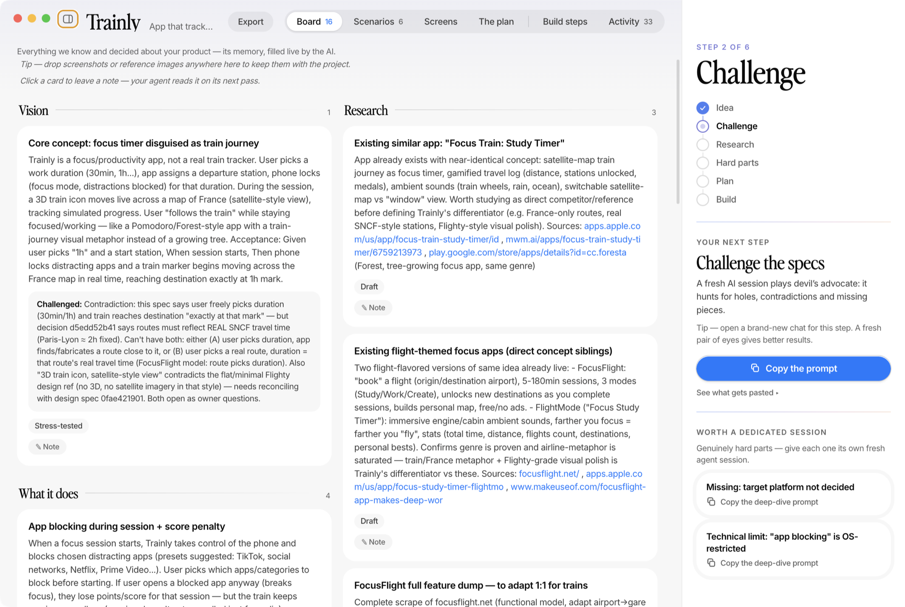

SpecDrive is a Mac app for people who build software by talking to an AI coding agent — and want it done properly, not just quickly. Your agent does the work; a live board keeps it honest.

No forms, no jargon, nothing to write. Connect the AI agent you already use (Claude Code, Cursor, Windsurf, Gemini, Codex…) and describe what you want in your own words.
Blank page or a real codebase with users and history: both work. On an existing app, the agent studies the actual code first and plans changes that don’t break what already works.
Specs, usage scenarios, sketches of every screen, the plan, the risks — appearing on your screen as you speak. It’s your project’s memory, in plain words.
Ordered steps with dependencies, each one verified before it turns green. You watch real progress — and you can leave a note on any card; your agent reads it on its next pass.
Three moments from the screenshot above — the kind of thing the board does for you all day.
SpecDrive doesn’t suggest good practice — it enforces it. The workflow is locked at the tool level, so “trust me, it works” is never enough.
A step can’t be marked done without evidence: what was run, what appeared on screen. It’s shown to you under every finished step.
A project can’t close until a fresh session — one that didn’t write the code — has reviewed it. And yesterday’s review never covers today’s changes.
Every plan must end with tests and a security & privacy pass. Skipping anything requires a written reason that lands on your board, visibly.
If the code changes while nobody’s watching the board, you get a warning before anything is trusted again.
Company charter, compliance, “always in French”, “data stays in the EU” — set standing rules once per folder; every project inside follows them, in every phase.
Click any card, leave a note in your own words. Your agent treats it as top priority and reports back what it did about it.
Free, for Apple Silicon Macs. Works with any MCP-capable AI agent — one click connects the ones we detect, one copy-paste connects any other.